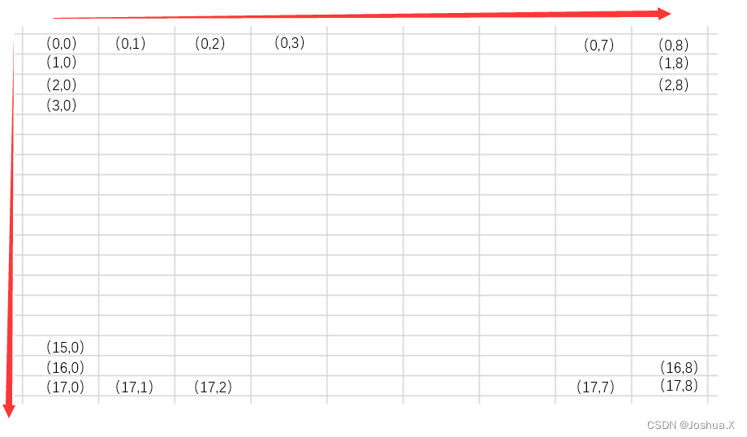
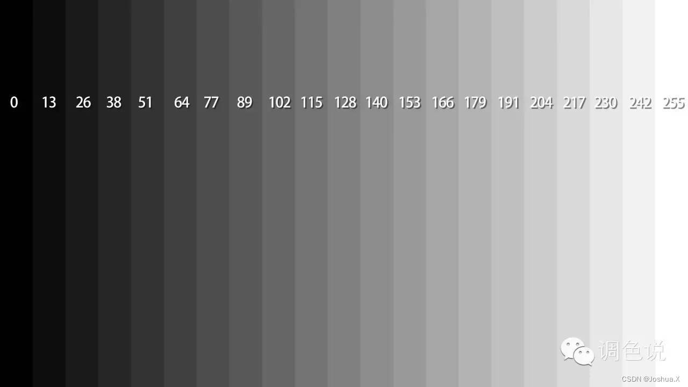
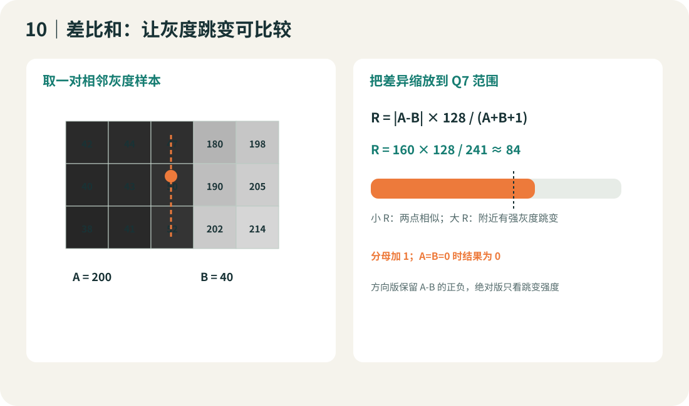
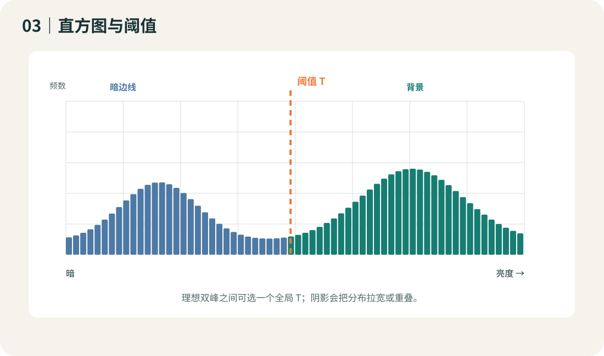
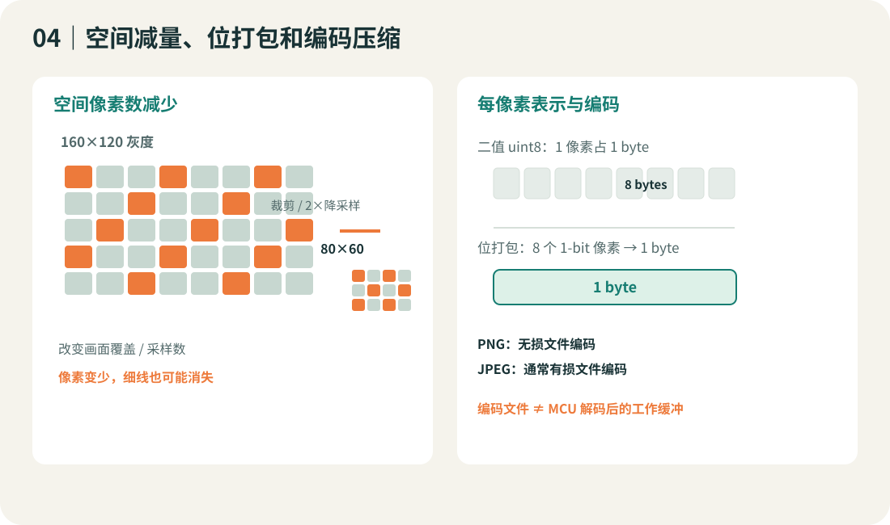
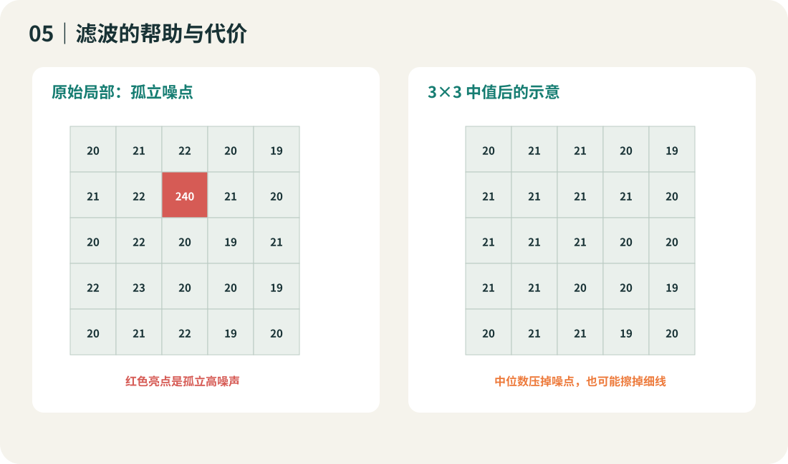
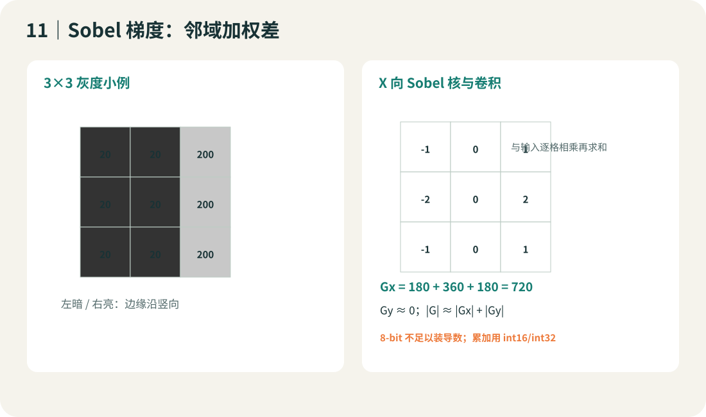
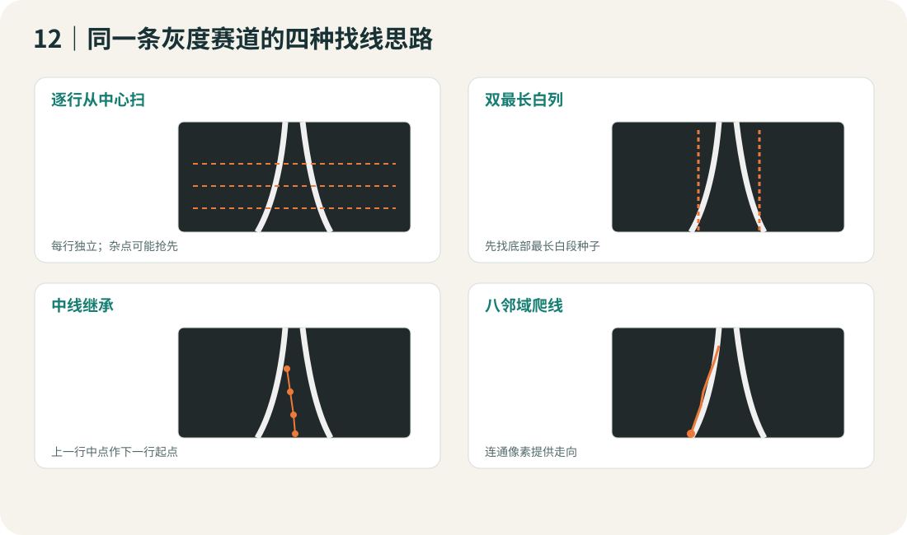
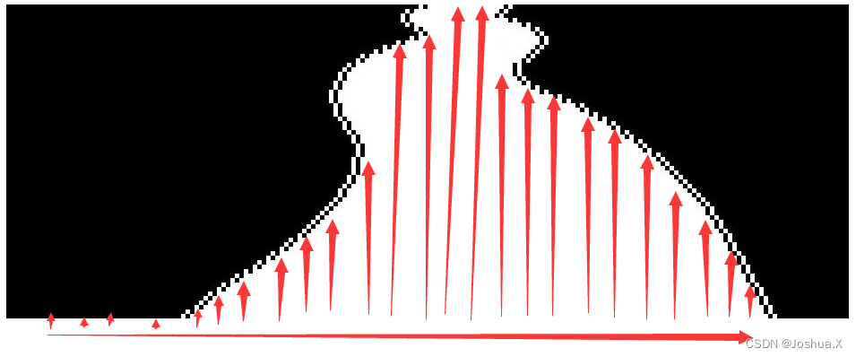

学习路线灰度图像 → 可解释像素特征
从一个灰度数组开始
本教程从总钻风灰度帧开始。每个概念都用小矩阵手算，用 C99 看数据如何变化，再用同一帧比较方法。课程脉络参考 Joshua.Xu 开源系列总目录，这里只选图像处理内容。
01读 GRAY8
→
02比较灰度
→
03掩码 / 梯度
→
04边界 / 扫线
→
05鸟瞰图像
课堂默认
据实验室提供的信息，以总钻风灰度输出作教学背景；具体型号、分辨率、帧缓冲符号和组别限制仍以实验室驱动及当年最终规则为准。正文只讲单通道灰度图像处理。所有 C 仿真帧由程序生成。
互动实验 01固定 / Otsu / 逐行 / 局部
看一帧非理想灰度图怎样二值化
路面有渐变、局部阴影、反光和噪点。选择阈值算法后，左侧看 GRAY8，右侧看白色前景掩码；直方图标出当前全局阈值。
灰度输入 · 160 × 120
掩码 · 白色代表亮路面前景
当前场景 0..255 直方图
阈值/前景：—
观察直方图两类重叠、阴影使全局阈值偏移，以及局部窗口过小时掩码随噪点跳变。示例参数不是总钻风推荐配置。
互动实验 02空间采样 / RAM
降采样时，细线从哪一步消失
右侧把低分辨率数组用最近邻放大显示。改变宽高比例，比较边界连续性和灰度缓冲字节数。
原始灰度 · 256 × 160
缩小后最近邻放大
降采样尺寸—
GRAY8 缓冲—
同尺寸 1-bit 掩码—
ROI/降采样减少像素位置；位打包减少每像素存储位数；PNG/JPEG 改变文件表示。三种操作不等价。
互动实验 03相邻灰度变化
差比和：亮度跳变有多强
改变取样间隔和 Q7 阈值，观察道路边界、阴影边缘和噪点会不会都被当成边界候选。
原灰度图
差比和候选跳变
Q7 = |a-b| × 128 / (a+b+1)
加 1 防止 a=b=0 除零；保留 signed 版本可判断亮到暗/暗到亮方向。
候选像素：—
互动实验 04一阶梯度
移动 Sobel 阈值，观察弱边与噪点
Gx 看水平方向灰度变化，Gy 看竖直方向变化。两方向都算出后再得到幅值，才能在弯边上观察完整边缘。
输入 GRAY8
当前梯度 / 边缘结果
边缘像素：—
互动实验 05扫线仿真
同一帧比较三种 C 扫线起点
这组模拟在一个白路面/黑背景掩码上显示水平扫线、双最长白列和中线继承。滑动到不同图像行，可以看种子位置怎么影响左右边界。
二值道路区域
边界和起点
扫描结果：—
互动实验 06方向状态
八邻域每走一步，都记录坐标和方向
逐步增加已访问步数，看相同掩码上的路径如何延伸；终点、断线、回到同一状态和最大步数都必须有停止条件。
局部边界像素
状态 = (x, y, 进入方向)
访问顺序 N → NE → E → SE → S → SW → W → NW
停止重复状态、无邻点或超过步数上限
路径步数：0
互动实验 07单应矩阵
拖动地平线宽度，观察逆透视 IPM
左图标记地面四个对应点；右图对每个目标像素用 H 的逆矩阵找回原图取样坐标。改变远端四边形宽度会改映射比例。
相机灰度图与四个标定点
IPM 鸟瞰灰度图
四对点 → 8 个自由参数；单应矩阵归一化 H[2][2]=1
灰度基础定义 → 数组
01｜一帧总钻风图像是什么
传感器给出 H×W 个亮度样本。GRAY8 每个像素一个 0..255 的数。第一步不是二值化，而是确认帧尺寸、灰度范围、图像稳定性和坐标。

来源图：Joshua.Xu 图像篇，CC BY-SA 4.0，原图未改。

来源图：Joshua.Xu 图像篇，CC BY-SA 4.0，原图未改。它展示 8-bit 灰度层次，不是彩色转灰度流程。
基础
GRAY8 与 y/x
读 gray[y][x]：先行后列；左上是 (0,0)。把 3×4 像素写在纸上，把0/255和中间值分开标注。
进阶
曝光、失焦和暗角
看原始灰度图与分行直方图。黑/白剪裁或运动模糊丢掉的边界，阈值/扫线无法凭空恢复。
横向扩展
帧标志、数组所有权
驱动报告一帧就绪后再处理；确认 DMA 不会在处理时覆盖数组。单缓冲须用驱动保证的稳定时段或复制快照。
C 语言：打印一小块灰度
for (int y = 0; y < 4; ++y) {
for (int x = 0; x < 5; ++x)
printf("%3u ", (unsigned)gray[y][x]);
putchar('\n');
}
循环变量 y 是行，x 是列。二维 C 数组按行连续存储；有效下标范围必须是 y<H 且 x<W。
参考：Joshua.Xu 摄像头篇 · 图像篇 · OpenCV 图像矩阵与 ROI
灰度差异邻点 → 跳变
02｜相邻像素：差值与差比和
边界是空间上的亮度变化。差分看变化方向；差比和把差异除以局部亮度尺度，在总体变亮/变暗时有机会保持较稳定的响应。

基础
绝对灰度差
d=|a−b|。两点 205 和48，相差157；20和22，相差2。对比间隔 δ=1、2、4，观察边线变宽对检测的影响。
进阶
Q7 差比和
R=⌊128×|a−b|/(a+b+1)⌋，结果约0..128。可以用 signed (a−b) 保留由亮到暗的方向。
横向
多间隔差分与局部方差
短间隔定位锐边；较长间隔增加渐变边灵敏度。方差可辅助排除平坦噪声；运算多一些，也可能把纹理当边界。
C 实现：避免除零、避免负数左移
uint8_t ratio_q7(uint8_t a, uint8_t b) {
int32_t d = (int32_t)a - (int32_t)b;
if (d < 0) d = -d;
return (uint8_t)((d * 128) / ((int32_t)a + b + 1));
}
乘法用有符号32位中间量；分母加1；不要写负数左移，C 标准不保证那种写法的行为。
算法线索：灰度差比和经验文章（授权未核验；本课仅链接并独立重写算法），Joshua.Xu 图像篇
阈值与分割固定 → 全局自适应 → 局部
03｜阈值不是魔法数字
亮路面白前景的约定为 I≥T。阈值要和当前灰度直方图、输入极性、窗口大小一起解释。

基础
固定全局 T
优点是每个像素只比较一次。阴影区会漏掉亮路面，高光/噪点也可能扩大片前景。
进阶
Otsu 最大类间方差
先统计 256 桶，再测试 0..254 的候选值，最大化 w0·w1·(μ0−μ1)²。适合整幅图能被分成两团的输入，不自动解决阴影。
横向
迭代双均值 / 逐行 / 局部均值
迭代更新两类均值中点；逐行大津适应前后亮度缓变；局部均值用窗口与偏置 C，适合局部不均光，但窗口和边界处理要调。
3×3 Otsu 手算
灰度 {20,22,30,34,200,210,218,220,224}。候选 T=34 将前4个归低类，后5个归高类；记 w0/w1、两类均值，计算类间方差。把 T 从0逐个扫至254并取最大值，就是 Otsu 的程序过程。若两类混在一起或一类为空，输出不可靠。
参考：Joshua.Xu 图像篇 / 大津 · OpenCV Otsu 与 adaptiveThreshold
减量与滤波采样 / 缓冲 / 噪声
04｜少存一点，别把边线采没了
“压缩”可能指减少空间采样、缩短像素位宽或压缩文件编码。先说明改变的是哪一种。

基础
ROI、最近邻 2×
只保留需要的图像区域，或每2×2取一个样本；80×48灰度为3840 B，40×24为960 B。窄线和远端细节会丢。
进阶
平均降采样、行缓冲
小块均值减少锯齿；行缓存用于滤波只保留必要行。缩小插值更平滑，但可能把窄亮道均成灰色。
横向
位打包与文件编码
二值uint8仍为1 B/像素；位打包8点/byte。PNG/JPEG是文件/传输编码，解码后仍可能要全幅缓冲。

均值滤波抹平尖峰但模糊边；中值抑制椒盐点且保留阶跃较好；形态学开闭修复二值小洞/小点。核越大，改变的边线也越多。中值 C99 代码和 PGM 输出见 C 实验包。
参考：Joshua.Xu 图像篇 / 图像压缩 · OpenCV Smoothing Images
梯度与边缘局部差分
05｜Sobel：把灰度斜率算出来
阈值看某点够不够亮；Sobel 看邻域亮度朝 x/y 方向变化多快。只显示梯度强度时会同时看到物体两侧边缘。

基础
横向 / 纵向差分
中心左右相减估 Gx，上下相减估 Gy。跳变越大，梯度幅值越大。
进阶
3×3 Sobel 卷积
核 [-1 0 1; -2 0 2; -1 0 1] 估 Gx；转置核估 Gy。把乘加先放进 int16/int32，再取幅值并缩放。
横向
Scharr / Canny / 二阶导
Scharr改核权重；Canny增加非极大值抑制和双阈值连边；Laplacian求二阶变化。结果仍是边缘候选，不是“哪条是赛道”的判断。
三行手算
20 20 200 / 20 20 200 / 20 20 200：中心 Gx=180+360+180=720，Gy≈0。若只存 uint8，先缩放/截断，否则 720 会溢出或丢动态范围。
参考：Joshua.Xu 图像篇 / Sobel · OpenCV Sobel · OpenCV Canny
扫线和边界同一二值输入并列看
06｜三种扫线：起点、方向、停止条件
相机灰度完成阈值后，得到白路面/黑背景掩码。扫线把二维区域简化为一组边界坐标，但所有坐标都应带有效标志。


来源图：Joshua.Xu 边线提取篇，CC BY-SA 4.0 原图未修改。课程重新讲解数组过程。
基础
逐行横向扫
在选定行从中心向左右找白→黑跳变，记录左白点、右白点与 valid。最简单，起点偏离道路时会找错。
进阶
双最长白列定种子
从图像底边逐列向上数连续白点，左右各取最长列当种子；最长长度可作有效搜索截止行，不是物理距离。
横向
中线继承 / 灰度差分
上行中点作为下一行起点；或直接对灰度比较间隔点差比和，跳过全幅二值中间图。保留 valid，设最大偏移防止漂走。
边界模式和失败点
亮路面约定下，左边界向左看“黑黑白”，右边界向右看“白黑黑”。若行内有噪声点、十字/环岛多分支、远端模糊，模式会产生假边。可记录白点连续长度、邻行一致性与失边数作为图像质量量。
参考：Joshua.Xu 边线提取篇 · USTB_Swan 团队实现取舍（历史个案）
连通跟踪有限状态遍历
07｜八邻域和迷宫法：沿相连像素走
八邻域每次查看中心周围 8 格。它会沿边缘方向走，不再独立扫每行；优点是能保留方向，难点是种子、岔路、缺口和闭环。
基础
逐行扫描给种子
从近端行找到一个可靠边界像素；验证它的 8 个邻点中至少有前景邻点后才开始生长。
进阶
八邻域链码
依固定方向顺序查看邻点，移动并更新进入方向；记录 (x,y,dir)，重复状态代表环回，步数上限保护程序。
横向
迷宫式墙跟随 / 连通域
墙跟随让方向状态持续贴着同一侧边界；连通域则遍历所有连通点，适合先筛候选但内存可能 O(HW)。缺线时二者都不会凭空补线。
迷宫法不是“跑最短路的 BFS”。它是有边界跟随策略的局部遍历；左优先/右优先在分叉处结果不同。每个状态记录坐标与进入方向，并限制最多 H×W 步。C 模拟会把行走轨迹保存成 12_trace8.pgm，可逐格查看。
参考：Joshua.Xu 边线提取篇 · B 站八邻域教程（选学链接）（视频内容未用作事实依据）
几何变换单应矩阵
08｜IPM 逆透视：把道路映到鸟瞰平面
地面道路可近似为一个平面。选四对平面对应点计算单应矩阵 H，才能让远近尺度更好比较；相机动过后必须重新标定。
基础
四点对应
原图地面四角 (x,y) 对应俯视目标 (u,v)，每对点产生两条方程。H 有 8 个独立参数，尺度固定 H[2][2]=1。
进阶
逆向映射取样
对每个目标像素反算源坐标，用最近邻或双线性读灰度，避免前向投影留下空洞。
横向
映射表 / 行变换
提前存源坐标映射表能省每帧矩阵除法、但占 RAM/Flash；每行解析映射省表但增加算术。看图像尺寸后再选。
手算一组平面射影关系
若 H[2][2]=1，u=(h0x+h1y+h2)/(h6x+h7y+1)，v=(h3x+h4y+h5)/(h6x+h7y+1)。四对点给 8 个未知数；四点共线会使方程退化。C 文件给出高斯消元和逆矩阵仿真。
参考：Joshua.Xu 对 IPM 的说明 · OpenCV 透视变换接口 · USTB_Swan 逆透视标定工具线索
C99 实验灰度输入 / PGM 输出
09｜编译完整图像处理仿真
程序自己生成有渐变、阴影、局部高光和噪点的 80×48 灰度帧，运行阈值、差比和、滤波、Sobel、扫线、八邻域和 IPM，并保存 19 张 PGM。
同一输入的 C 仿真输出总览。每个文件可以单独放大查看。
基础
看一个灰度数组
先读 01_gray.pgm，人工对照印出的 12×8 数字块，自己判定路面边界在哪几列。
进阶
比较完整掩码与边界
打开 fixed/Otsu/per-row/diff-ratio/Sobel PGM；观察最长白列、扫线和 IPM 分别改变了哪些像素/坐标。
横向
移植到目标驱动
只替换帧输入函数，保存驱动灰度快照后回放。本教材不提供与未给出的相机SDK/主控绑定的驱动源码。
GCC 编译命令
cd examples/c
gcc -std=c99 -O2 -Wall -Wextra -Wpedantic image_lab.c -lm -o image_lab.exe
.\image_lab.exe generated
编译不调用 OpenCV。生成 PGM 和运行输出仅作为算法模拟；RAM/运算分析应按实验室目标板重新测量。
下载 C 示例与 19 张 PGM完整讲义 MDPDF
原图与自绘图每张有出处
博客示例图和本培训仿真图
下面两张是 Joshua.Xu CC BY-SA 4.0 博文里的历史图片，未改动并保留水印；其余算法过程图由本培训自绘或由 C 仿真生成。
原图未修改。Joshua.Xu《图像》，CC BY-SA 4.0。打开原文。
原图未修改。Joshua.Xu《边线提取》，CC BY-SA 4.0。打开原文。
全部素材授权和原图链接见 图像署名表。许可范围和其它开源代码链接见 sources.csv；文本/代码许可见 CONTENT-LICENSE.md。
资料与许可规则 / 原作者 / 官方算法文档
从原文进入，不照搬旧参数
Joshua.Xu 第18届总钻风/灰度图像系列
三篇原文均声明 CC BY-SA 4.0；用到的 3 张原图原样保留水印并署名。其分辨率、阈值、摄像头参数是第18届旧设备经验，不作为当前组别推荐值。
GitHub 开源横向阅读
这些仓库只供按组别和许可证自行对照。本课程不复制未核实授权的代码、图片、模型或界面。
组别/硬件边界本次未收到目标届次和主控信息；博客是历史案例。开课前对照组委会当年最终组别规则和实验室真实总钻风帧复核。范围记录
随身词表灰度图像术语
快速查词
- GRAY8
- 每像素一个 8-bit 灰度采样，通常 0..255。
- 二值掩码
- 每个点按前景/背景分组；显示为0/255。
- 直方图
- 统计0..255每种灰度值出现次数。
- 差比和
- 将两点绝对灰度差按灰度和值归一化。
- Sobel
- 用小卷积核近似横/纵灰度导数。
- 最长白列
- 逐列从图像近端向远端数连续白前景。
- 中线继承
- 上一行中点作为下一行的扫线起点。
- 八邻域
- 检查当前像素周围八个方向的邻点。
- 单应矩阵
- 两个平面之间的 3×3 透视投影关系。